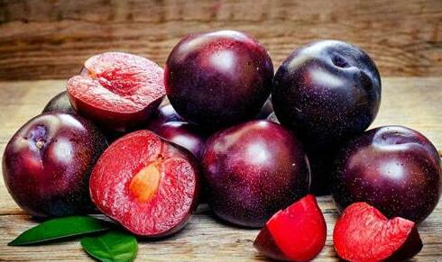

李子树下为何会抬死人？
南朝梁沈约曾在《麦李诗》中写道：“青玉冠西海，碧石弥外区。化为中园实，其下成路衡。在先良足贵，因小邀难逾。色润房陵缥，味夺寒水朱。摘持欲以献，尚食且踯躅。”
自古以来李子在中华大地上都备受欢迎，是一种十分常见的水果，中医将之入药用来治疗病症，百姓将之当成一种食物，能够顶替些许饥饿，世间少有不认识的人。
但很少有人知道，李子其实也是有毒的！

李子树下抬死人
从古至今，民间一直流传着一句话——桃养人，杏伤人，李子树下抬死人！
李子有毒这种说法在中华大地上已经流传了很久。
并不是无稽之谈！
唐代有药王之称的孙思貌曾今说过：“（李子）不可多食，令人虚。”，明代兰茂也曾在《滇南草本》中提到过：“（李子）不可多食，损伤脾胃”。
显然这粒小小的果子并没后想象中那么无害。
但既然有毒有害，为什么那么多年来依旧如此受人欢迎呢？
首先便是因为李子并没有这句话中描述的那么恐怖，或许李子真的存在一些毒性，但还达不到致死的地步，这句话有夸大之嫌。
其次，《随息居饮食谱》中记录道：“多食生痰，助湿发疟疾，脾虚者尤忌之”。
由此可见李子有毒是对于部分人群来说的，并不是所有人都是。
所以说尽管千年来李子有毒的说法到处都是，但李子的地位依旧不可动摇。
不过在民间，人们对于“桃养人，杏伤人，李子树下抬死人。”这句话其实还有着不同的理解。
一些比较迷信的人认为，之所以会说李子树下抬死人，原因是传说老子出生时以李子树为姓，叫做李耳，也被称作李子，和我们吃的李子一个读音，吃李子就相当于吃老子，所以不可吃……
这种说法显然是无稽之谈，现在我们分析李子的毒性一般从三方面出发，一方面是李子的食用禁忌，另一方面是李子的搭配禁忌，还有一方面，是李子本身对人体的伤害。
浮在水面上的李子不能吃
民间流传着一个说法——李子不沉水有毒！
意思是在洗李子的时候，那些飘在水面上不沉下水底的李子是有毒的。
这句话和之前提到过的李子树下抬死人的说法一样，对也不对。
对是对在它确实说对了一件事，不沉水的李子确实很可能有毒，而错也错在这句话过分夸大，并且不是对所有李子都适用。
我们都知道，李子是一种实心的水果，果肉和种子之间的间隙很小，有些甚至是完全连在一起的。
这就导致了李子本身的密度很大，起码比起水来说要大得多，所以大多数李子泡在水中都会沉入水底。
那么不沉入水底的那些是怎么回事？
有两种可能，一是这颗李子被虫蛀了，导致内部空出了一部分空余空间，李子的整体密度小于水，于是李子就浮在了水面上。
这种情况下如果还要执意吃李子，不说吃到满口的蛋白质，还会吃到许多虫子的排泄物和其他脏东西，很有可能影响健康，吃坏肚子。
另一种情况则是李子自身的结构稀疏，导致种子和果肉之间的存在空隙，果肉和果肉之间也不如其他发育完全的李子一般紧致，所以就飘在了水面上。
这种情况并不少见。
这种情况下的李子，要么是没有发育完全的，虽然没有毒，但吃起来又苦又涩，要么就是发育不好的，吃起来口感不如人意。
如此看来，不沉水的李子有毒这种说法存在一定局限性，不完全正确，不过也确实有一定道理，值得让人重视。
 上一篇
上一篇